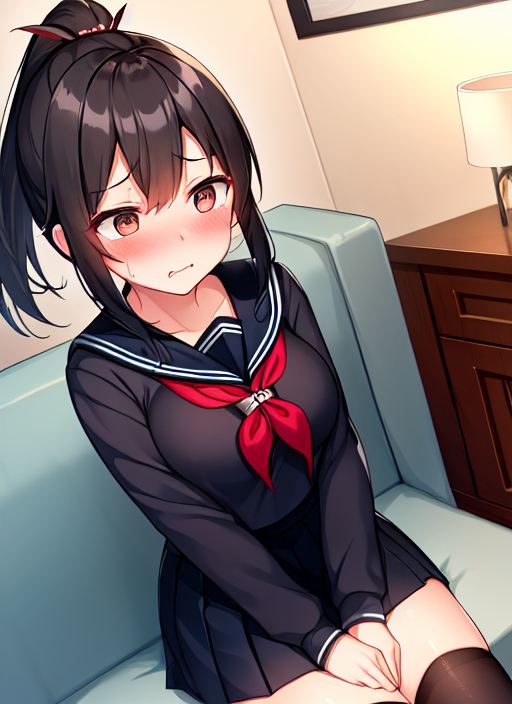
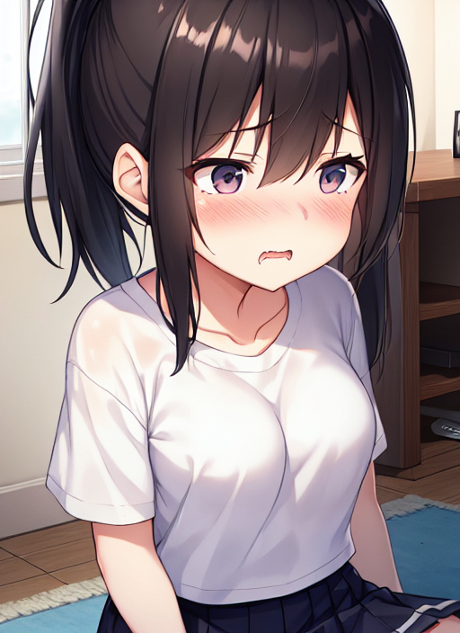

学生証
とある７月の日曜日、大学生の結崎あつきは自宅でパジャマ姿で過ごしていた。 あつきにとって日曜日は、大学の授業もバイトもない日なので、からだを休める目的で大体昼過ぎまで寝てるのがお決まりであった。 ちなみに、この日は中３の弟が部活で外出しており、両親は夫婦水入らずでハワイへ旅行中のため、現在は彼一人が家にいる状態であった。
空腹のためにリビングに向かったあつき、するとテーブルの上になにやらカードらしきものが置いてあるのを見つけた。
「向日葵高校の学生証？ なんだこりゃ？」
それは、近くにある女子高校の学生証であった。 しかし、その学生証には名前と写真が貼られていない。
「う～ん、ゴミみたいだし捨てるか。」
学生証に疑問を抱くのだが、まだ寝ぼけが残ってたので、考えるのをやめたあつきは学生証をゴミ箱に捨てようとした。
すると、からだ全体に電流が走った感覚を感じたあつきはその場で動けなくなった。 それと同時にあつきに変化が始まった。
髪の毛の長さが背中まで達したと同時にヘアゴムで纏められてポニーテールを形成し始めた。 顔つきもあどけなさの残る女子の顔つきになり、胸元にはムクムクと２つの膨らみが増していく。
肩幅も狭くなっていき、背も10センチほど小さっていき、お腹には括れが形成される。 下半身もあそこが消滅していき、脛毛だらけの脚も白い肌の美脚となった。 着ていたパジャマがドロッと溶けていき、水色のワンピースタイプの制服となり、胸ポケットに向日葵高校のエンブレムが描かれていく。 なにも履いてない脚には、白ソックスが履かされていき、くるぶし辺りで三つ折りにまとめられた。
そして、捨てようと思っていた学生証には、『1-A 結崎 春菜』と名前が書かれていき、同時に冬制服を着たあつきだった女の子の写真が貼られていった。
その学生証は、ひとりでに動き始めて女の子の制服の胸ポケットに挿入された。
大学生だったあつきは、学生証に触れたことで近くにある女子高校の制服を着た女の子になってしまったようだ。
「あれっ？ 私は…？」
やっとしゃべれるようになったようだが、先程までの出来事が思い出せない様子。
「あっ、思い出した。学生証を忘れたから取りに戻ったんだっけ。」
どうやら、学生証を取りに学校から自宅に戻ってきたようだ。
「えーと、胸ポケットに学生証は入れたね。さて、学校に戻りますか。」
胸ポケットに学生証を入れてことを確認した春菜はそそくさと向日葵高校へと戻っていった。
数時間後、部活の練習を終えた中３の弟のひびきが帰ってきた。
「お兄ちゃん、ただいまー。」
ひびきは兄を呼ぶが、兄からの返事がない。
「あれっ？ どこか行ったのかな？」
普段の日曜日なら、家から１歩も出ずに引きこもっているはずの兄が今日に限っていないことに疑問を抱くひびき。
「まだ寝てるのかな？」
気になったので、ひびきは兄の部屋を覗きに行く。
「お兄ちゃん？ って、やっぱりいないや。」
ドアを開けて中を覗くが、そこに兄の姿はなかった。
「しかもパジャマもないし、一体どこへ行ったんだ…？」
すると、ひびきはあるものに目がいった。
「えっ、赤いランドセル？」
なぜか兄の部屋に赤色のランドセルが置いてあったのを気にし始めるひびき。
すると、ひびきが見つけたことが引き金となったのか、ランドセルが意思を持ったように動き始めた。
「えっ、ランドセルが動いた！？」
そして、一瞬にしてひびきの背中に背負われる形となった。
「くそっ、取れない…！？」
頑張って外そうとするが、まったく外れる気配がない。
と、ランドセルを背負われたひびきに異変が起きた。 短い髪の毛がサラサラと伸びて肩にかからないところで止まり、どこからかヘアゴムが現れてポニーテールに纏められた。 産毛程度の髭の生えていた顔も、髭のないとっても艶のある肌の女の子の顔に変わっていった。
肩幅も狭くなり、平べったくて当然の胸には２つの膨らみができていき、ムクムクと大きくなってＢカップほどに達した。
まっすぐだったお腹に括れができていき、脚の筋肉も腕と同様に脂肪のついた細いものに変わり、股のアソコも徐々に体内に吸い込まれてきれいさっぱりと消え去ったのだった。
からだの変化が終わり、次に着ていた制服が変化を始める。 穿いていた黒のズボンが、紺色の薄手のフレアスカートとなり、下着のトランクスはハート柄のついたショーツに、白の靴下はフリルのついたものに変わっていった。
肌着の白のタンクトップは、胸を支えるブラジャーとなっていき、白の開襟シャツはボタンがなくなり英語の書かれた白のTシャツとなった。
最後に、左胸に着けていた中学校の名札が形をクニクニと変えていき、紺色のフェルトに『桜台小 結崎』と書かれたプラスチックの板、『会長』と書かれた白の役員バッジが付いた名札となり、胸元に安全ピンで止められて変化が終わった。
そして、女の子に変化したひびきはその場で気を失い、床にうつ伏せのまま眠り始めたのだった。
どれくらい時間がたったのか、ひびきだった女の子は眠りから目を覚ました。 いつの間に背負っていたランドセルは肩から外されており、眠っていた場所も自分の部屋のベッドに変わっていた。
「あれっ？ 私、一体…？」
眠っている間に、ひびきの記憶も書き換えられたようで、これまでの出来事を忘れてしまったようだ。 すると、ひびきのいる部屋に誰かが入ってきた。
「あっ、お姉ちゃんお帰りー。」
入ってきたのは、大学生の兄だった女子高生の春菜であった。
「ただいまー。由希、あんた夕御飯どうする？」
「どうしようかな？ お姉ちゃんは？」
「私は、これから友達と近くのファミレスで夕御飯をかねてダベりに行くけど、付いてくる？」
「うん、行く♪」
姉の誘いに由希は快くOKを出す。
「友達がもうファミレスに先に行って待ってるから、私は制服のままでいいや。てかあんた、なんで学校の名札を付けてるのよ？」
「えっ、ウソ！？」
ここでようやく由希は胸元に学校の名札を着けていることに気付いた。
「う～ん、私もなんで名札をしてるのか覚えてないや。でも、外すのめんどくさいし、どうせならお姉ちゃんのお友達に名札の会長バッジを自慢しちゃおうかなって♪」
「ふーん、まあ好きにすればいいわ。」
「てへへ♪」
「それじゃ、行こうか。」
「うん♪」
そう言って、春菜と由希は一緒に近くのファミレスへ出掛けていったのだった。
『由希ちゃん、会長とかすごいじゃない！』
『確かに、名札を着けて自慢したくなる気持ちもわかるわー。』
『にしても、結崎って苗字、書くの大変そうだねー。』
ファミレスでは、由希の学校の名札に注目が集まり、自分の話題で持ち切りとなったことで由希はとてもご満悦だったことは言うまでもない。